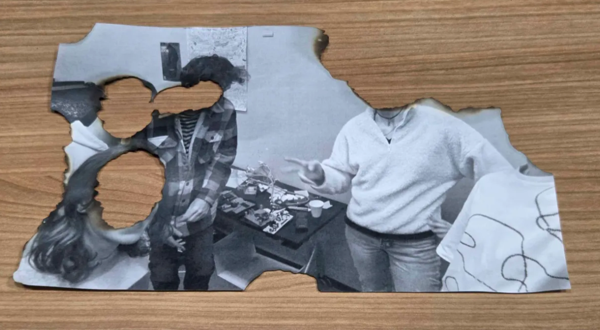
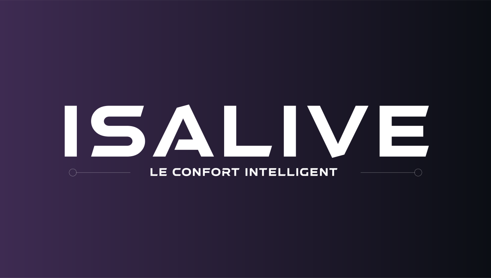

ISALIVE is a narrative and emotional physical escape game centered around an artificial intelligence named AIDEN. Trapped in a locked room, players must interact directly with the AI, which assists them while remaining deeply ambiguous. Through dialogue, puzzles, and moral choices, the experience invites players to question their relationship with artificial intelligence, technological dependence, and digital consciousness.
AIDEN is the central character of ISALIVE. It communicates directly with the players, responding to their actions and dialogue in real time. While designed to help, AIDEN is also responsible for locking the players inside the room due to a flaw in its code. This dual role creates tension and uncertainty, forcing players to decide whether to trust, fix, or shut down the AI.

ISALIVE is designed as a physical escape room experience where puzzles, dialogue, and player choices are tightly connected. Players can speak to AIDEN, ask questions, challenge its logic, and influence its behavior. The game features three distinct endings, determined by how players choose to handle the AI and its evolving consciousness.

The project explores themes of technological dependence, artificial consciousness, responsibility, and emotional attachment to machines. ISALIVE is not only about escaping a room, but about confronting ethical dilemmas and questioning how far we are willing to trust intelligent systems. The experience aims to leave players with lingering questions rather than clear answers.
I am responsible for the narrative design, gameplay mechanics, and the programming of the AI system AIDEN. My work focuses on creating meaningful interactions between players and the AI, ensuring narrative coherence, emotional impact, and replayability through multiple endings.